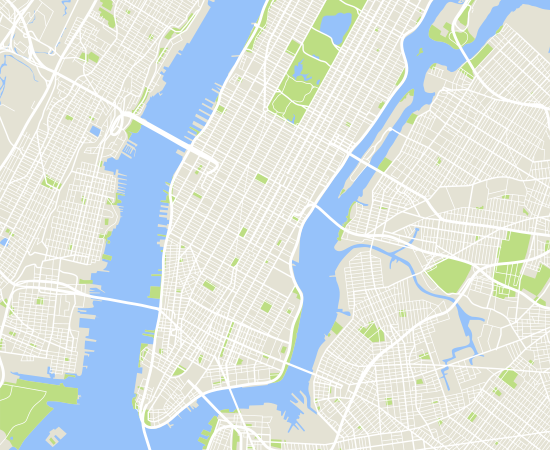

A FIELD GUIDE TO BEING LATE
Sorry,
I'm on my way.
One hundred excuses. Leave it up to chance.
Plant your excuse somewhere in New York.
✳ONE CITY. ONE SCHOOL.
100 REASONS TO BE LATE.
100 REASONS TO BE LATE.
LIVE FROM NEW YORK

HUDSON RIVERCLICK ANYWHERE TO PLANT AN EXCUSE ↗◎ Straight-line distance from UC · approximate00 EXCUSES PLANTED